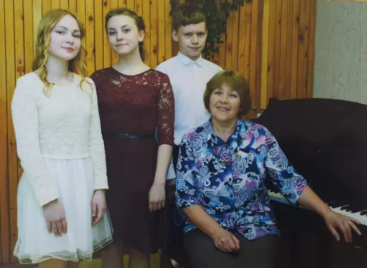
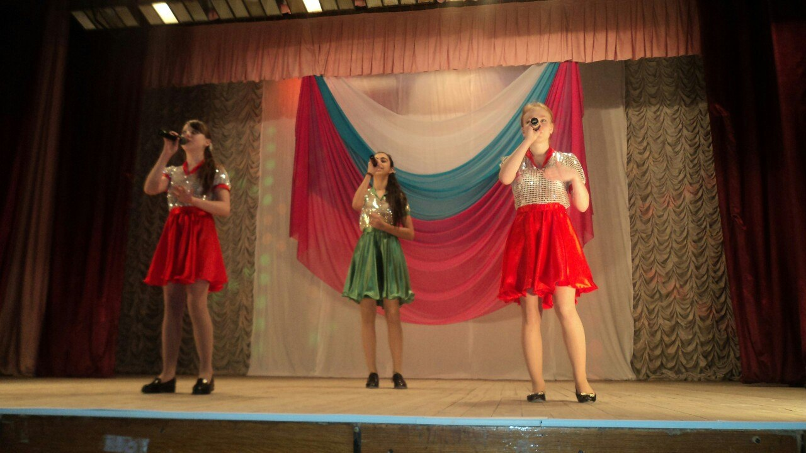

У многих людей есть хобби. Они делают нашу жизнь более интересной.Хобби это то,
что люди хотели бы делать, когда у них есть свободное время.
Каждый выбирает хобби согласно его характеру и вкусу. Некоторые люди любят музыку, другие любят читать книги.
Некоторые люди любят собирать марки, монеты или значки, другие предпочитают озеленение или пеший туризм или
фотографировать.
Некоторые люди любят готовить, другие вязать или шить. Грубо говоря, хобби — это дело вкуса.
Мое хобби - это занятие музыкой. Я очень люблю петь, играть на музыкальных нструментах, это именно то,
что приносит мне удовольствие от процесса.
Я закончила музыкальное отделение школы искусств по специальности фортепиано. Самостоятельно научилась играть на
гитаре и укулеле.


Также я ходила на вокал и выступала на многих концертах, участвовала в конкурсах и занимала призовые места.

В 2019 году я со своими подругами создала ютуб канал, на который мы выкладывали каверы на разные песни.
Перейдя по ссылки ниже, вы можете посмотреть наши видео.
ссылка на видео